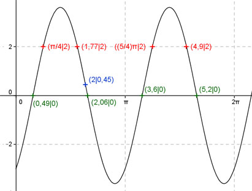

Aufgabe 222 Berechnen Sie die Amplitude von: y = 2 sin 2x - 3 cos 2x x 2 π/4 oder 1,77 oder (5/4)π oder 4,9 y 0,45 2 Amplitude = 3,6 (Berechnung siehe unten); Periode = 2π Berechnung der Nullstellen: 0 = 2 sin 2x - 3 cos 2x |+3 cos 2x 3 cos 2x = 2 sin 2x |:cos x sin 2x sin 2x 3 = 2 -------- mit -------- = tan 2x cos 2x cos 2x 3 = 2 tan 2x |:2 tan 2x = 1,5 --> arc tan 1,5 = 2x ---> 2x = 0,983 |:2 x = 0,4915 (0,49 gerundet). x1 = 0,49 gerundet oder 28,1° gerundet. x2 = (π + 0,49) = 3,63 (3,6 gerundet) oder 208°. x3 = (0,49 + π/2) = 2,06 gerundet oder 118° gerundet. x4 = (2,06 + π) = 5,2 gerundet oder 298°.  Berechnung der Amplitude A: 2,06 - 0,49 Sie tritt an den Stellen x = 0,49 + (-------------) = 1,275 oder 73° 2 oder bei (1,275 + π/2) = 2,85 oder 163° oder bei (1,275 + π) = 4,42 oder 253° usw. auf. Amplitude = f(73°, 163°, 253°) = = |2 sin 2 * 73° - 3 cos 2 * 73°| = = |2 sin 2 * 163° - 3 cos 2 * 163°| = = |2 sin 2 * 253° - 3 cos 2 * 253°| = = |1,12 - (-2,49)| = 3,6 gerundet.